在上一个视频中，我们了解到正则化尝试让参数 w 一到 w n 的值变小，以减少过拟合。00:02
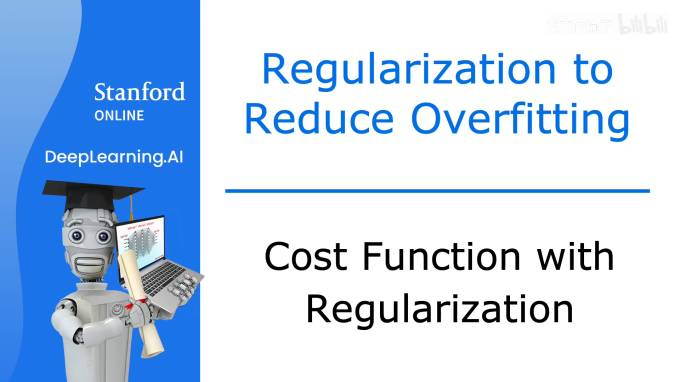
在本视频中，我们将基于这个直观理解，为你的学习算法开发一个修正后的代价函数，你可以用它来实际应用正则化。一，回顾一下之前视频中的这个例子，我们看到，如果用二次函数拟合这些数据，会得到相当好的拟合。00:11
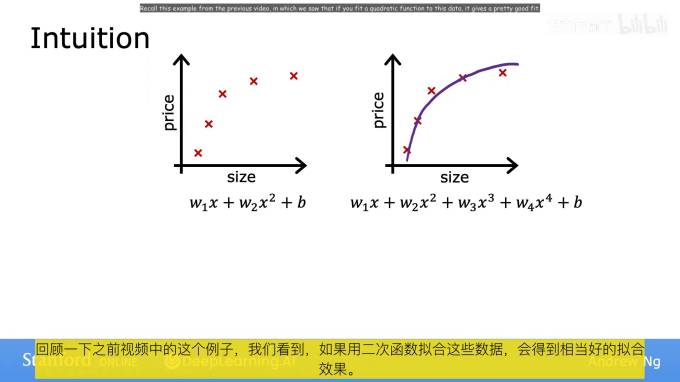
但是，如果你拟合一个非常高阶的多项式，最终会得到一条过拟合数据的曲线。00:36
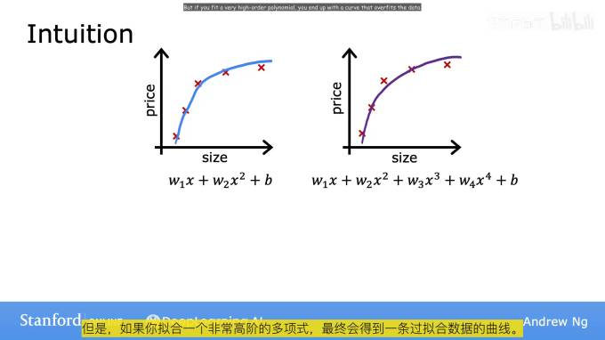
现在，考虑下面这种做法。00:45
假设你有办法让参数 W 三和 w 四变得非常非常小，比如说接近于零。00:48
假设我们不直接最小化这个目标函数，这是线性回归的代价函数。01:00
假设我们修改代价函数，给它加上一千乘以 w 三的平方，再加上一千乘以 w 四的平方。01:08
这里我选择一千是因为它是一个大数，但其他任何非常大的数字也可以。01:19
因此，使用这个修正后的代价函数，如果 w 三和 w 四很大，实际上就会对模型进行惩罚。01:25
因为如果你想最小化这个函数，让这个新的代价函数变小的唯一方法就是让 w 三和 w 四都变小，否则，这一千乘以 W 三的平方和一千乘以 w 四的平方项将会变得非常大。01:34
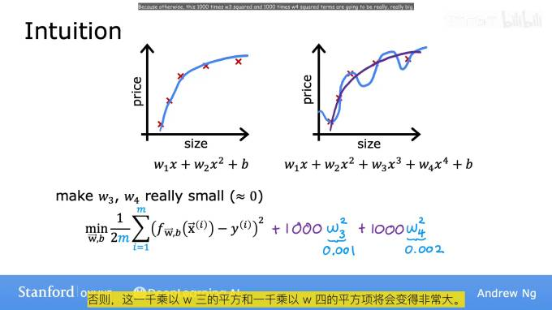
所以，当你最小化这个函数时，最终会得到 w 三接近于零，w 四也接近于零。01:53
这样我们实际上就几乎消除了特征 x 的三次方和 x 的四次方的影响，去掉了这里的这两项。02:01
如果我们这样做，那么最终对数据的拟合就会更接近二次函数，可能只包含来自 x 的三次方和 x 的四次方特征的微小贡献。02:13
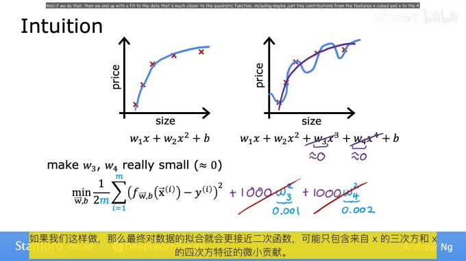
这很好，因为与所有参数都可以很大并最终得到这条剧烈波动的曲线相比，这样对数据的拟合要好。02:26
更一般地，这就是正则化背后的思想。02:37
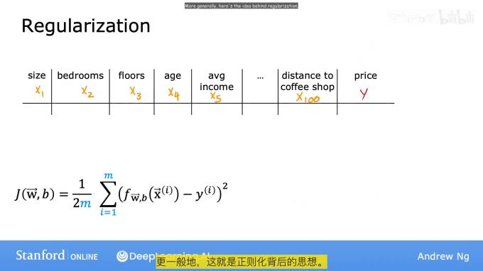
其思想是，如果参数的值较小，那就有点像拥有一个更简单的模型，也许特征更少，因此更不容易出现过拟合。02:42
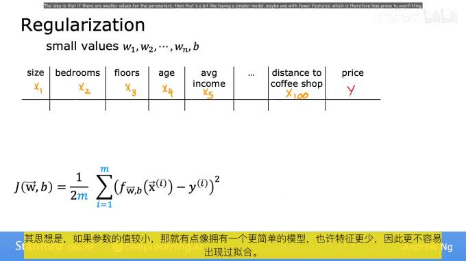
在上一张幻灯片中，我们只惩罚了，或者说只正则化了 W 三和 w 四。02:54
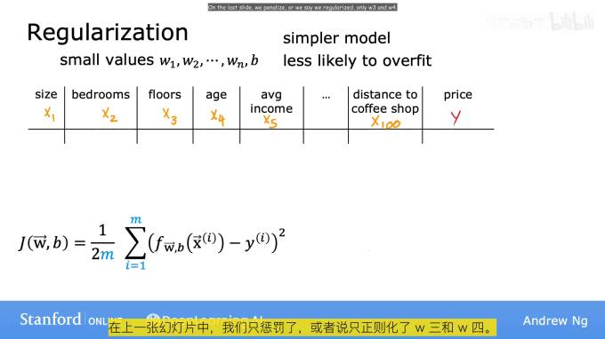
但更一般地，正则化的实现方式通常是，如果你有很多特征，比如一百个特征。03:03
你可能不知道哪些是最重要的特征，哪些应该被惩罚。03:11
因此，正则化通常的实现方式是惩罚所有特征，或者更准确地说，惩罚所有的 W 参数。03:16
并且可以证明，这通常会导致拟合出一个更平滑、更简单、波动更小的函数，从而更不容易过拟合。03:26
所以，对于这个例子，如果你有包含一百个特征的房屋数据，可能很难事先挑选出哪些特征该包含哪些该排除。03:36
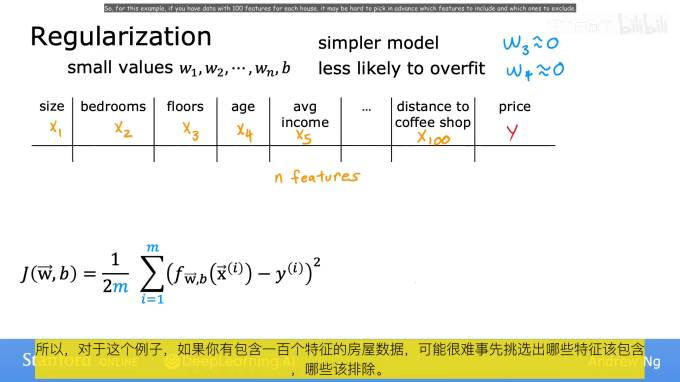
那么，我们就构建一个使用全部一百个特征的模型。03:45
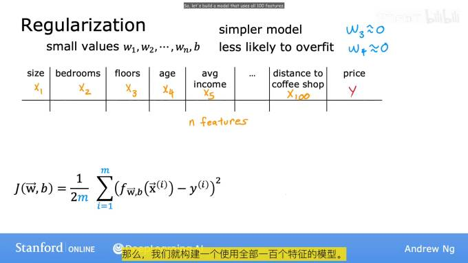
因此，你有一百个参数，w 一到 w 一百，以及第一百零一个参数 b。03:50
因为我们不知道这些参数中哪些是重要的，让我们稍微惩罚所有的参数，通过添加一个新项：lambda 乘以 j 从一到 n 的和，其中 n 是一百，即特征的数量，求和项为 wj 的平方，以此来缩小所有参数。04:00
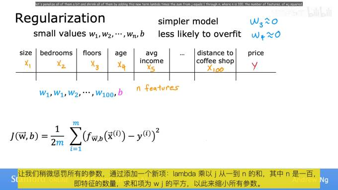
这个值 lambda 是希腊字母 lambda，也被称为正则化参数。04:21
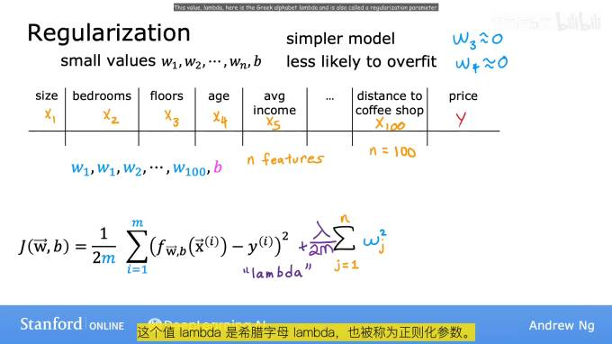
因此，类似于选择学习率 alpha，你现在也需要为 lambda 选择一个数值。04:30
有几点我想指出：按照惯例，我们不仅使用 lambda 乘以 wj 的平方的和，还会将 lambda 除以两倍的 m，这样这里的第一项和第二项都按两倍的 m 分之一进行缩放。04:39
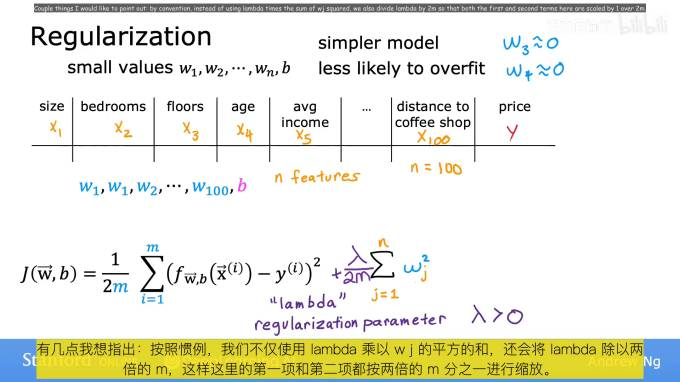
事实证明，通过以相同方式缩放这两项，选择一个好的 lambda 值会变得稍微容易一些。04:57
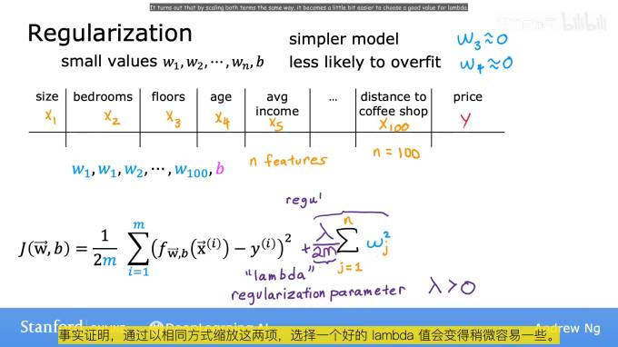
你会发现，即使你的训练集规模增大，比如说你找到了更多的训练样本，那么 m，也就是训练集大小变得更大了，如果你有这额外的除以两倍的 m 的缩放，那么你之前选择的同一个 lambda 值也更有可能继续有效。05:07
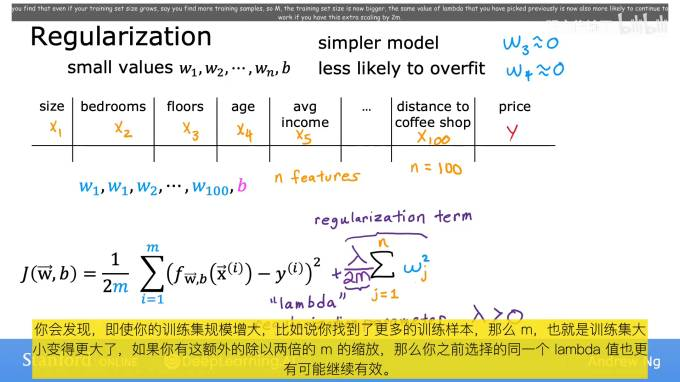
另外，顺便说一下，按照惯例，我们不打算惩罚参数 b 过大。05:27
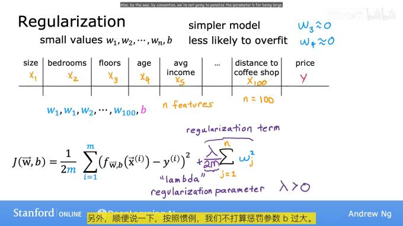
在实践中，是否这样做影响非常小。05:32
一些机器学习工程师，实际上一些学习算法的实现，也会包含 lambda 除以两倍的 m 乘以 b 平方这。05:37
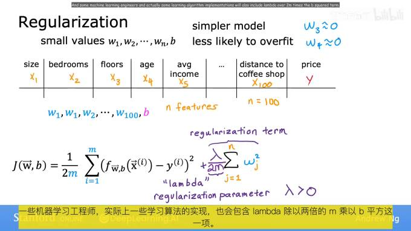
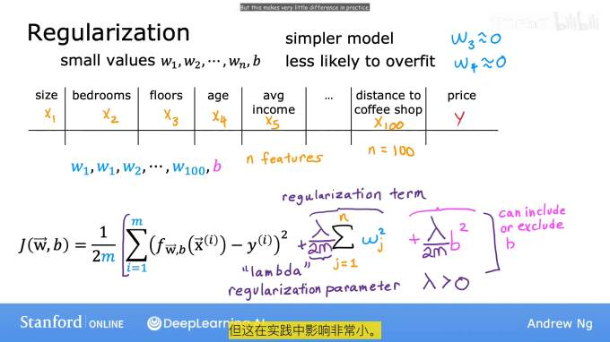
更常见的惯例，也是本课程中将采用的，是只正则化参数 w，而不正则化参数 b。05:53
所以，总结一下，在这个修正后的代价函数中，我们想要最小化原始的代价，即均方误差代价，再加上第二项，称为正则化项。06:02
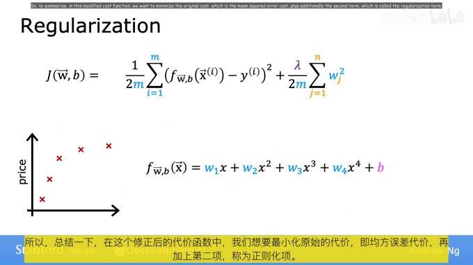
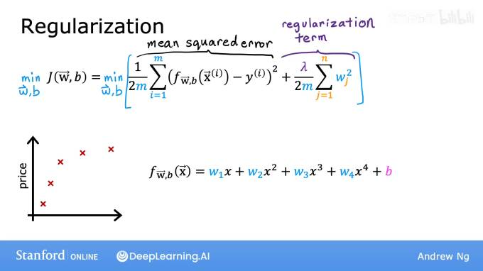
因此，这个新的代价函数在你可能拥有的两个目标之间进行权衡。06:17
尝试最小化第一项，通过最小化预测值与实际值之间差的平方，来鼓励算法很好地拟合训练数据。06:23
而尝试最小化第二项，算法也会尝试保持参数 w 较小，这将有助于减少过拟合。06:33
你选择的 lambda 值指定了这两个目标之间的相对重要性，或者说相对的权衡，或者说你如何平衡这两个目标。06:43
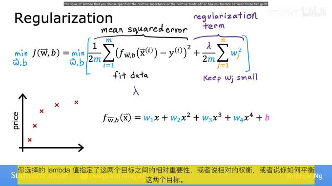
让我们看看不同的 lambda 值会导致你的学习算法有什么行为。06:54
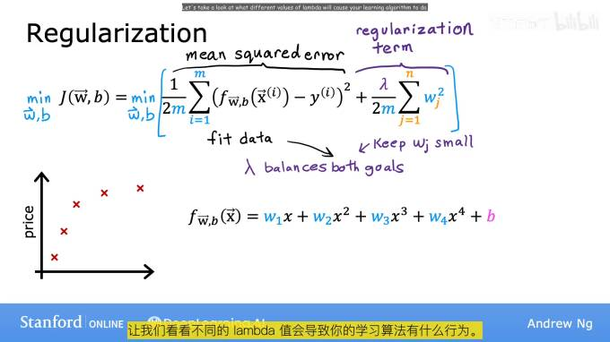
我们继续使用线性回归的房价预测例子。07:00
所以 f(x) 是线性回归模型。07:05
如果 lambda 被设置为零，那么你根本没有使用正则化项，因为正则化项乘以了零。07:08
因此，如果 lambda 为零，你最终会拟合出这条过度波动、过度复杂的曲线，导致过拟合。07:18
这是 lambda 为零的一个极端情况。07:26
现在我们来看另一个极端。07:30
如果你将 lambda 设置为一个非常非常大的数字，比如 lambda 等于十的十次方。07:32
那么你就对右边的这个正则化项赋予了非常大的权重。07:40
最小化这个函数的唯一方法是确保所有的 W 值都非常接近于零。07:46
因此，如果 lambda 非常非常大，学习算法将选择 w 一、w 二、w 三和 w 四都极其接近于零。07:54
于是，f(x)基本上就等于 b，所以学习算法拟合出的是一条水平的直线，导致欠拟合。08:05
回顾一下，如果 lambda 为零，这个模型会过拟合。08:16
如果 lambda 非常大，比如十的十次方，这个模型会欠拟合。08:21
因此，你需要的是某个介于两者之间的 lambda 值，它能更恰当地平衡第一项和第二项，即在最小化均方误差和保持参数较小之间进行权衡。08:26
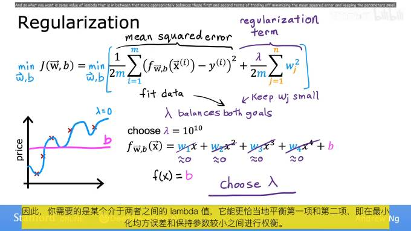
当 lambda 的值既不过小也不过大，而是恰到好处时，你就有望能够拟合一个四阶多项式，保留所有这些特征，但得到的函数看起来像这样。w。08:43
这就是正则化的工作原理。08:57
在本专业课程后面讨论模型选择时，我们还会看到多种为 lambda 选择好值的方法。09:00
在接下来的两个视频中，我们将详细阐述如何将正则化应用于线性回归和逻辑回归，以及如何使用梯度下降来训练这些模型。09:09
掌握了这些，你就能避免过拟合问题了。09:21
对于这两种算法都是如此。09:24